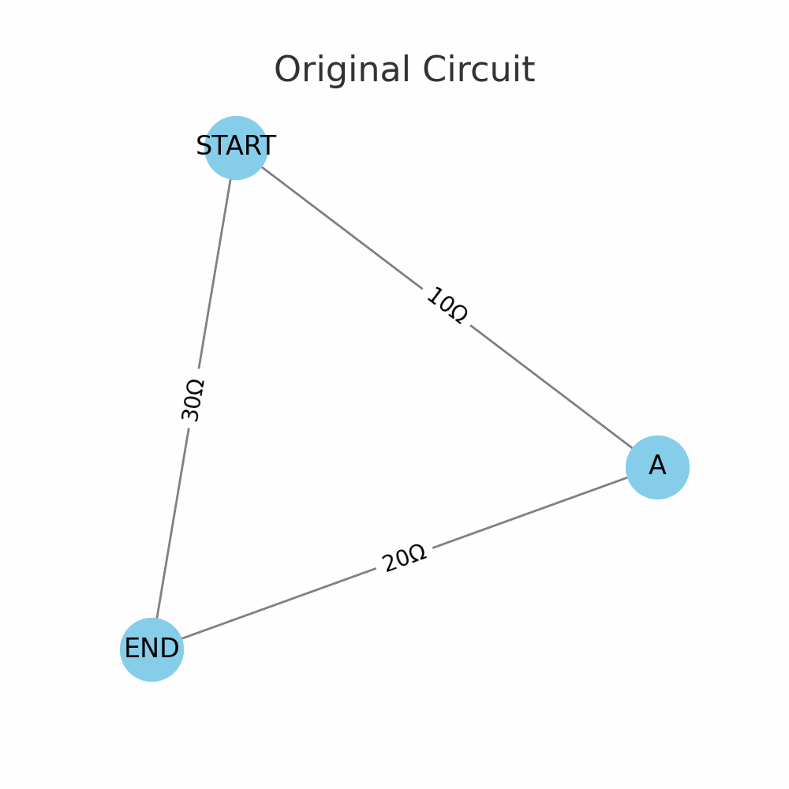

Problem 1
Equivalent Resistance Using Graph Theory (Visual + Algorithmic Approach)
Problem Scenario
Given a resistor network, calculate the equivalent resistance between two nodes using graph theory.
This Python implementation supports: - Series and parallel detection - Arbitrary topologies - Graph simplification using NetworkX
Why Graph Theory?
- Each node = circuit junction
- Each edge = resistor with resistance value (weight)
- This method works well for complex, nested combinations and can be automated
How It Works
The algorithm: 1. Detects and reduces series connections 2. Detects and reduces parallel connections 3. Simplifies the graph iteratively 4. Outputs the equivalent resistance between any two given nodes
Python Code
import networkx as nx
def equivalent_resistance(graph, node_start, node_end):
G = graph.copy()
def reduce_series(G):
changed = True
while changed:
changed = False
for node in list(G.nodes):
if node in (node_start, node_end):
continue
neighbors = list(G.neighbors(node))
if len(neighbors) == 2:
u, v = neighbors
R1 = G[node][u]['resistance']
R2 = G[node][v]['resistance']
R = R1 + R2
G.add_edge(u, v, resistance=R)
G.remove_node(node)
changed = True
break
return G
def reduce_parallel(G):
changed = True
while changed:
changed = False
for u, v in list(G.edges):
if G.number_of_edges(u, v) > 1:
resistances = [d['resistance'] for d in G.get_edge_data(u, v).values()]
R_parallel = 1 / sum(1 / R for R in resistances)
G.remove_edges_from([(u, v)] * G.number_of_edges(u, v))
G.add_edge(u, v, resistance=R_parallel)
changed = True
return G
prev_nodes = -1
while prev_nodes != G.number_of_nodes():
prev_nodes = G.number_of_nodes()
G = reduce_series(G)
G = reduce_parallel(G)
if G.has_edge(node_start, node_end):
return G[node_start][node_end]['resistance']
else:
raise ValueError("Unable to simplify circuit fully to a single resistance.")
# --------------------------- EXAMPLES ---------------------------
# Example 1: Simple Series Circuit
G1 = nx.Graph()
G1.add_edge('A', 'B', resistance=5)
G1.add_edge('B', 'C', resistance=10)
print("Test 1 - Equivalent Resistance from A to C:", equivalent_resistance(G1, 'A', 'C')) # 15
# Example 2: Simple Parallel Circuit
G2 = nx.MultiGraph()
G2.add_edge('A', 'B', resistance=10)
G2.add_edge('A', 'B', resistance=20)
G2 = nx.Graph(G2)
print("Test 2 - Equivalent Resistance from A to B:", equivalent_resistance(G2, 'A', 'B')) # ~6.67
# Example 3: Mixed Series and Parallel
G3 = nx.Graph()
G3.add_edge('A', 'B', resistance=10)
G3.add_edge('B', 'C', resistance=20)
G3.add_edge('A', 'C', resistance=30)
print("Test 3 - Equivalent Resistance from A to C:", equivalent_resistance(G3, 'A', 'C')) # ~12

Efficiency & Extensions
- Works well on sparse graphs (tree-like)
- Time complexity depends on the number of iterations and edges
- Can be extended with:
- Delta-Wye (Δ-Y) transformations
- Symbolic analysis for unknowns
- GUI tools for dragging and simplifying circuits